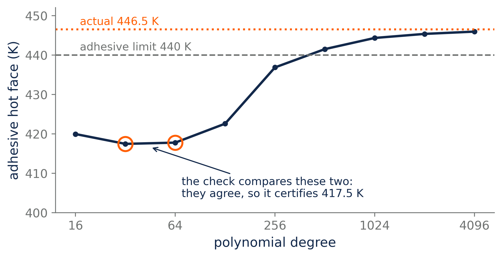

Show them
The place across from the east lot had been a diner when Joyce started at Falkenrath-Voss and was now Contrail, all reclaimed wood and a chalkboard menu, but the coffee was still the coffee. She ordered chamomile anyway. She’d had her one cup at five, and a second one only ever made her jittery. She got there early and took the small table by the window instead of a booth. A booth has a head and a foot. A table for two by a window has neither.
Luis came in at 10:02 with no laptop and nothing in his hands, which she noted, and ordered black coffee, which she also noted, and sat down across from her very straight, the way people sit at hearings.
She had brought the printout of his notebook, all fourteen pages. She put it on the table between them.
“I read it twice,” she said. “Once fast, once slow. You start where your reader starts, and you define every term before you use it. Cell 6 does in three lines what I’d have taken a page to do.” She turned to cell 5: his proof that the tents were a basis. “One question. Why didn’t you just draw this one?”
He looked at the page as if it belonged to somebody else. “It’s a proof.”
“So is a picture, sometimes. This one would have been.” She tapped the page. “Your visual thinking is a strength. Play to it.”
Something crossed his face, too quickly for her to catch. He picked up his coffee. “A picture doesn’t count.”
She didn’t argue. Arguments seemed to go one way with Luis. But she thought of the line she’d added under guesses that morning, someone taught him a picture doesn’t count?, and it felt less like a long shot than it had at seven.
“Did you get anywhere on why Mara’s code gives a converging temperature when its flux never converges?” she asked.
He shrugged. “Didn’t work on it. The notebook took long enough, just doing Tent.”
She looked at him for a moment. She didn’t quite believe him, couldn’t prove otherwise, and didn’t try.
This was the moment she’d been turning over since eight. Should she walk him through the answer, step by step, the way she’d walk anyone through it, and watch him nod or not? That was the old way. It was the comfortable way. It would also teach him exactly nothing about next week. Next week he’d be standing in front of a room of people who might be wrong, or might be right in ways he hadn’t considered, and what she needed to know, what she couldn’t know yet, was what he did with someone else’s argument. Did he correct it? Crush it? Did he say obvious?
There was only one way to find out, and it meant putting her own work in front of him to be judged. She’d find that uncomfortable, she noticed. Good. It would be a fair trade.
“Well, I made some progress,” she said. “I think. I’d like you to check me.”
She slid the notepad across the table, open to the page.
She watched his eyes go down the page and stop at the three-term line, where she’d struck out the middle term as zero, and stay there. His hand went to his jacket and came back with a pen. He didn’t write anything. He held it over the page the way she’d seen good designers hold a pen over a drawing they were about to mark up, before they knew where.
“The first part,” he said at last. “The best-fit part. I had the integral going to zero. I didn’t have why it was allowed to.”
He stopped, as if he’d said more than he’d planned to.
She did not say so you did work on it. Instead she gave him a small, conspiratorial smile and said, “Is it right?”
“The Gibbs line’s hand-wavy.”
“It’s Gibbs. It’s well known. Anyway, I didn’t feel like proving Gibbs before breakfast.”
Almost a smile. He went back to the page. “It’s right.” He turned the pad toward her and set the tip of the pen on the bound, and made a single mark: a circle around the inequality. “This is loose, though. The real error halves every time you double the polynomial degree. Your bound only has it coming down by root two.”
She looked. He was right, and she hadn’t seen it. He’d seen it in about forty seconds, upside down, in a derivation written in her language and not his.
And he’d said it well. Not obvious. Not wrong. What was loose, by how much, and how he knew. If that was how he talked to someone who’d asked him to check her, then maybe the problem had never been that he couldn’t. Maybe no one had ever asked him like this. It was hard to say. Luis was not an easy read, and for all she knew she had him entirely wrong. But he was here, and his pen was out, and he was leaning toward the page instead of away from it.
“Then you’ll have to tell me why,” she said, and took a sip of her tea. “Not now, though. You’ve got bigger fish to fry. Brandon’s thermal review, next week. You’re on the agenda. Twenty minutes.”
The pen stopped. He looked at her for a long moment. He opened his mouth once and shut it again. Then, finally: “They don’t want to hear from me.”
Joyce set her mug down and looked at him. His eyes looked back, wide, like a small animal’s waiting to see what the much bigger animal would do with it.
“Do you think the only reason I believed you is that I’m somehow different from the rest of them?”
He snorted. “I mean, yeah. You’re the only one in two years who has.”
Joyce frowned. “No, Mr. Arroyo. I’m the only one in two years who’s managed to understand what you did. And it was only after I showed you I understood it that you wrote something designed to be understood.”
His jaw tightened. He didn’t answer. Either this was landing, or the conversation was about to get a great deal more interesting. Joyce took a moment to feel her breath come in through her nose, fill her stomach, and go out again.
She laid her hand on the printout between them, lightly, like it was something dear to her. “A smart cookie like you can see that’s backwards. Right?”
Luis let out a fast breath. “Every patch, every update, every fix I’ve brought in has improved the workflow, the accuracy, the usability. For two years.” His finger came down on the table at workflow, at accuracy, at usability: quietly, but hard. “And after every one, they went after me. They called me names.” His voice climbed on the last part and cracked a little at the top.
It sounded younger than he was. It sounded, Joyce thought, like a kid who’d been picked on for a long time and had never told anyone, and then one day it all came out at once, to the first teacher who looked like she might listen.
There it was, or a sliver of it: the hurt underneath the obvious, underneath the better-than-you technical edge. It must have been so lonely. Believing he was helping. Probably watching each attempt fail and pushing harder the next time, to finally deliver the code that would make everyone see him the way he wanted to be seen. And each time, instead of thanks, he was the cat who brings a dead mouse to the door: proud of it, and baffled that the people inside only see something they now have to deal with.
She wanted to give him a hug and tell him it would be all right. She wanted to fix it. She wanted to march into Brandon’s office, and then into the analysts’ bullpen, and explain that he was rough around the edges, yes, and also the best numericist she had seen in years, and that they would work out the kinks, and that he would probably be their boss someday. Were they really going to let him slip away? Not slip away: fire him, as a final verdict on someone they’d never bothered to understand. They were being as childish as he was. Get rid of the person who’s hard to get along with, and let him carry all the consequences. None of it would land on them.
She felt the chair under her legs, its weight holding her up, and the floor holding the chair. It was all right to feel sad for Luis. She let herself. She cared about him now: about who he was, and who he wanted to be. She’d bought into that future, and maybe she could see it more clearly than he could.
So yes, she cared, and she did think he was that good, and she did want Falkenrath-Voss to see it. But there was nothing she could tell them. The only way for them to see it was for them to see it. And Luis could show them. She’d seen that this morning, fourteen pages of it. She just had to convince him to.
She gave him what she hoped was a warm smile, something he could feel and not just see, something he could carry out of here and find in his pocket the next time it got hard. “Letting people in is hard.” She thought of all the years she’d never told Brandon how much his rise at Falkenrath-Voss had meant to her. Of not telling Luis, even now, that his notebook was the best she’d read in years. “But Luis,” she said, and was surprised to hear herself use his first name, “the only way through is to trust them. You have to trust that if you show them in a way they can understand, they’ll respect it. They’ll respect you.”
He sat very still. He looked like someone on a video call whose connection had dropped, frozen mid-thought. Come on, Luis. Would it kill him to give her some sign of how that had landed? Earth to Luis.
She tapped the table twice and stood, with deliberate pep. “Well. I’ve given you a lot to think about. Why don’t you put together a draft of the talk, and we’ll go through it together before the review.”
He stood when she did, mechanically. “That sounds good. I’ll work on that.” Flat, and polite.
She held the door for him, and on the threshold one more thought came to her: something to wake him out of wherever he’d gone. “Oh, I meant to ask.” She paused, and let herself hope this one would reach him. “What does your slope picture do when \(k\) changes inside an element?”
He stopped in the doorway and looked at her. This time it was almost a full smile. A quarter smile, on anyone else, but Joyce was coming to believe that was as wide as Luis’s face physically went.
“I haven’t tried it,” he said. And he walked out across the lot, back toward the building.
In the car she put the notepad on the passenger seat and didn’t start the engine.
It could go either way. She made herself say it plainly, the way she’d have said it in a review, because it was true. He could stand up next week and give the analysts his email again, only slower. He could hear Dennis Hale’s first question and answer it with the first word that came to mind. She had told him to trust them, and she had watched him freeze, and she had no idea what had happened behind his face. Frozen and thinking look the same from the outside.
But he hadn’t said no. I’ll work on that. From Luis, that was practically a handshake.
And this time she hadn’t answered for him. She’d asked him to answer for himself, and he hadn’t yet, and finding out whether he would was the price of not rescuing him. She had paid a different price once, with Mara. She’d take this one.
Then the quarter smile at the door. I haven’t tried it. Not obvious, not a defense. A man with a problem he hadn’t solved yet, who didn’t mind her knowing it.
She caught herself doing arithmetic she hadn’t meant to do. If he got through next week, even scraped through, there would be a follow-up, and Brandon would want her at it. And at the one after that. She had told herself she was done. She tried the other thought on carefully, the way she’d try on a coat she hadn’t meant to buy: staying on as a consultant. Not forever. Not for Falkenrath-Voss, which would manage without her, and not for Brandon, who owed her a dozen cupcakes either way. For Luis. Long enough that he wouldn’t need a translator. Or her.
It fit better than she’d expected. That was the part that surprised her.
She started the car.
At home the kit was still sealed. She looked at it from the doorway of Sam’s room for a moment. It had waited nine days; it could wait a little longer. Then she went to find her phone. She had a call to return.
At eleven that night, Luis is at his kitchen table with a slide deck open, and the deck is one slide long.
Kestrel stack B: thermal certification. His name under it. The company template’s blue bar across the top. That’s all.
The content isn’t the problem. He could give this talk to Pruitt in his sleep: the wiggle spacing, the plateau, the two blind runs, the four nodes that land. It’s been sitting in his head, finished, for a week. The problem is the room.
He lists it the way he’d list boundary conditions. Brandon, at the head of the table. Dennis Hale. Kurt Sorensen. Eleven more names from the thread, every one of whom found time to reply to the whole list about his tone.
He hasn’t eaten. He knows that the way he knows what time it is: as a number he’s been ignoring. Since nine he has opened the thread four times and closed it four times without getting past the first subject line.
If you show them in a way they can understand, they’ll respect it.
He did show them. That’s the thing. The sweep, the zoom, the reason in one paragraph. A curve that goes through a dashed line. You don’t need a report for that; you need eyes. After the mesher he showed them for three weeks, report after report, and they adopted it because Brandon made them, and then went back to talking about his attitude.
She doesn’t know them. She’s retired. She gets to be generous. She gets to sit by a window with a cup of chamomile and say trust them, like it’s a thing you decide.
He opens a new browser tab, and then a job site, and he’s typed numerical methods into the search box before he has decided to. Forty-one results within a hundred miles. Senior CFD developer. Simulation engineer, thermal. A startup with a paper-airplane logo that wants someone passionate about solvers. He clicks the first one, and then Apply, and the site asks for a résumé. His last résumé is two years old and has Falkenrath-Voss at the top in the present tense. He sits with the cursor on Choose file.
It would be so easy. Start over somewhere nobody has read the thread.
And there’s the problem with it. Somewhere nobody has read the thread is somewhere nobody has read anything. He’d be the new guy with the new solver and the old tone, and in two years there’d be a new thread.
He closes the tab. Not dramatically. He just closes it.
What actually bothers him isn’t trust them. It’s the other thing she said, the one he didn’t answer, because he didn’t have an answer: It was only after I showed you I understood it that you wrote something designed to be understood.
At the table it had sounded like she was taking credit for his notebook. He makes himself check it anyway, the way he’d check any claim: against the data.
The email. 2:14 in the morning, a week ago, to forty people he’d known wouldn’t get it. Forty people he’d decided wouldn’t get it. That’s what Joyce would say. One plot, one paragraph, and a subject line he’d been proud of.
The notebook. 5:04 this morning, to one person, who had asked how it worked. Twenty-odd cells. Every term defined before he used it.
The same problem. The same week. Completely different write-ups, and the only difference was who he meant them for. And as much as he liked the email, as sharp as he felt sending it, if someone asked him which was the better document, the email or the notebook, he knows what he’d say. Maybe not out loud. But he knows.
He doesn’t like that. It’s a clean result, and he doesn’t like it.
He can’t make himself trust Dennis Hale. But that isn’t what the data says to do. The data says something smaller. The notebook worked because he wrote it as if its reader was worth writing for. He could write one slide that way. One. As an experiment. If it’s wrong, it’s one slide.
So what does Dennis care about? He scrolls up in the thread for the first time tonight and makes himself read past the subject line. This code has twenty years of successful flights behind it. Not flux. Never flux; Dennis said so, in writing. Twenty years, and the number he signs.
Twenty years. He’d written a paragraph about that once. At 2:14 in the morning, in the draft: I know this code has a long track record, and I’m not saying anyone missed something obvious. The flux note in the user guide was right for the stacks it was written for. He read it back that night and deleted it, because it sounded like an apology for being right. Softening it would make it sound like he wasn’t sure.
Was it softening? It’s late, his stomach is rumbling, and he has no interest in giving Dennis, or any of the other thermal analysts, more grace than they’ve given him.
Fine. No apology, then. But Dennis signs a temperature. So: the temperature, and nothing else. No flux. No Gibbs.
Your visual thinking is a strength. Play to it. He’d nearly rolled his eyes at that one. Now he opens a plotting cell instead of a text box. One picture, and every mark on it something Dennis already reads every week: the certification check’s two runs, the adhesive limit, the number Dennis signed. And one thing he doesn’t read: where the temperature goes when you don’t stop.
He looks at it for a long time. It isn’t how he’d say it. It’s how Dennis would hear it. It costs him something, building it that way. He wants to delete it.
He doesn’t delete it.
When he finally looks at the clock, it’s 2:14. Of course it is.
He opens a new email to Joyce Abernathy, attaches the deck, all one slide of it, and types, and deletes, and types.
To: Joyce Abernathy
Subject: draft
First slide. More tomorrow. You said we’d go through it.
He reads it back. Three sentences, and nothing in them anyone could circle.
It isn’t what it says, though. He knows what it is, even if he’d never type it.
A week ago he’d never heard of her. Now she’s the one person he’d send a half-start of a thing to at two in the morning. He doesn’t have a word for that. He isn’t going to look for one tonight. He can’t remember the last time he asked anyone for anything and meant it. Not at Falkenrath-Voss. Not at Halston, either, really.
He sends it.
He should go to bed. He doesn’t. There’s one more thing that’s been sitting in his head since the doorway at Contrail, like a message he hasn’t opened: What does your slope picture do when \(k\) changes inside an element?
He opens a new notebook. In the first cell he types a conductivity that climbs smoothly through the tile, the way a real tile’s would: k = lambda x: 1 + 2 * x / 24.
It’s the ticket, he realizes. Add graded conductivity within a layer. Two weeks old now, and the first person to make him want to do it is a retired manager with a cup of chamomile.
He puts his fingers on the keys.